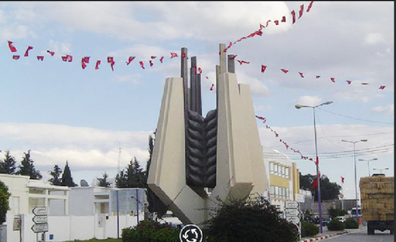
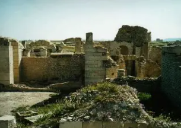
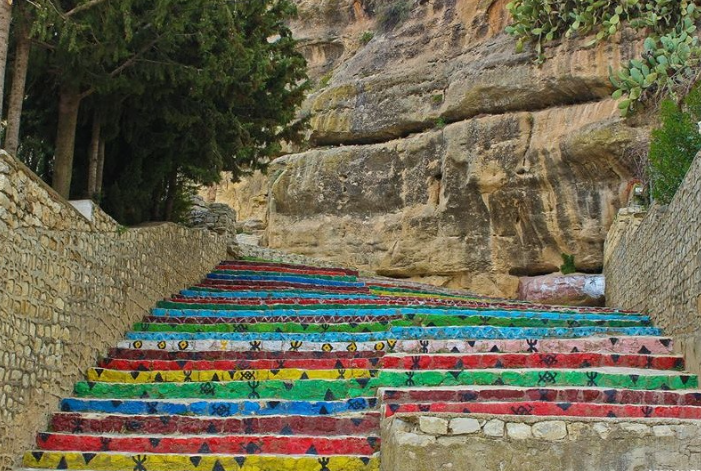

La Terre du Blé et de l'Histoire

Siliana est un gouvernorat situé dans le nord-ouest de la Tunisie, au cœur de la dorsale tunisienne. C'est une région montagneuse et agricole, traversée par l'oued Siliana et dotée de vastes plaines céréalières.
La ville de Siliana, chef-lieu du gouvernorat, est un centre agricole important entouré de collines verdoyantes. La région est connue pour sa production céréalière intensive et son élevage ovin.
Le gouvernorat se distingue par son riche patrimoine archéologique avec des sites numides et romains exceptionnels, ses paysages montagneux variés et son rôle de grenier à blé du nord tunisien.
L'un des principaux greniers à blé de la Tunisie, avec de vastes plaines dédiées à la culture des céréales, de l'orge et des légumineuses.
Site archéologique romain majeur, ancienne Mactaris, avec son arc de triomphe imposant, ses thermes et son forum exceptionnellement bien conservés.
Région montagneuse avec djebel Serj (1 357 m) et djebel Bargou, offrant des paysages spectaculaires, des forêts de pins et une nature préservée.
Important élevage ovin et bovin dans les montagnes et les plaines, contribuant significativement à la production nationale de viande et de laine.

Ville numide puis romaine fondée au IIe siècle av. J.-C. Site archéologique exceptionnel avec son arc de Bab el Aïn, son grand thermes, son forum et ses basiliques chrétiennes. L'un des sites les mieux préservés de Tunisie.

Montagne imposante dominant la région avec son village berbère traditionnel perché à flanc de montagne. Architecture rurale authentique et vues panoramiques sur les montagnes de la dorsale.